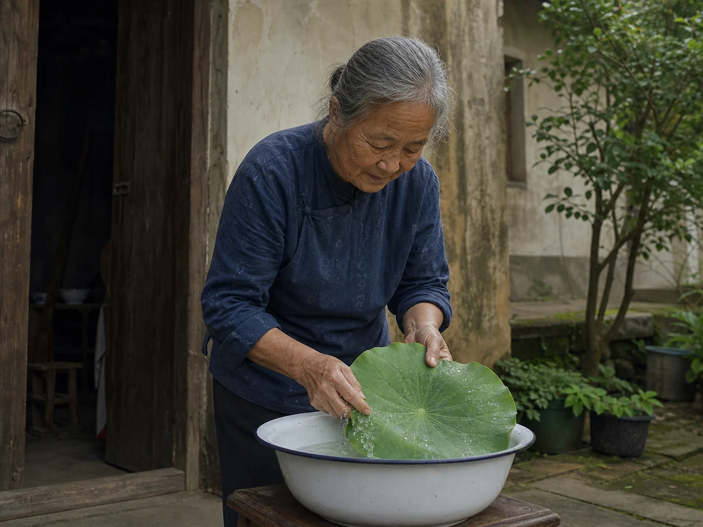

Lotus Leaf Congee in the Late-Summer Pot
A neighbor passed a rain-beaded lotus leaf across the courtyard wall, and my grandmother carried it inside to cover a pot of late-summer congee.

A leaf across the wall
Our neighbor called from the lane before I saw her face above the courtyard wall. She had returned from the pond with two lotus leaves, their broad surfaces folded around her forearm. Her trouser cuffs were still dark from the wet path beside the water. She kept one and passed the other to my grandmother by its thick green stem.
Water stood in small beads across the leaf. My grandmother carried it to the enamel basin, rinsed both sides, and traced the pale veins with her thumb. I held the edge while she cut away the hard end of the stem.
Green fragrance over the rice
The rice was already softening when the leaf reached the kitchen. My grandmother folded it once to fit the pot and laid it over the nearly cooked congee beneath the lid. Steam pressed the leaf downward, and its green smell moved into the room before she lifted the lid again.
Mung-bean soup stayed in its covered summer pot until the beans opened, while this congee borrowed its scent from a leaf that was removed before serving. Lotus-root water began with muddy joints cut at the sink; the leaf arrived clean from a neighbor's hands and covered the rice rather than disappearing into it.
Bowls after the hottest hour
My grandmother lifted the leaf with chopsticks and folded it into a shallow plate. The congee beneath it was still white, with only a faint green cast near the surface. The folded leaf released one last line of steam across the plate. She set the pot beside the open window until the strongest afternoon light had moved from the sill.
I carried two shallow bowls to the table, and our neighbor received the first one across the wall. After the bowls were empty, my grandmother rinsed them, turned them upside down on the rack, and folded the darkened leaf beside the peel bucket.